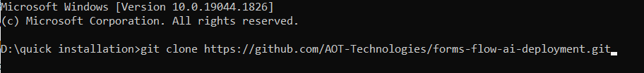
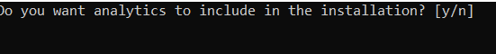
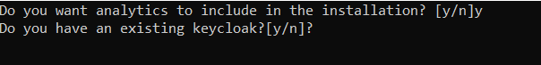

<article class="docs-article" id="section-1">
    <section class="docs-section" id="installation-1">

        <h1 class="docs-heading">Quick Installation</h1>
        <hr>
        <p>For the installation of formflow.ai, we recommend referring to this article for a quick installation. This
            article steps through how to install and configure the forms flow by using easy install. Easy installation
            saves time and labor and is less error-prone than manual installation. It helps you set up a running
            environment of forms flow by installing the necessary packages and customizing the configuration files
            automatically.</p><br>
        <h3>Prerequisites</h3>
        <ol>
            <li>For installation of formsflow, the <a href="https://www.docker.com/">docker desktop</a> needs to be
                installed (For both Windows/Linux). If docker has been installed, and if any previous formsflow.ai
                installations were done already, those need to be removed from the docker Desktop.</li>
            <li>The installation is supported only by Node versions 14 and below (Older versions of Node.js are listed
                <a href="https://nodejs.org/en/download/releases/">here</a>).
            </li>
        </ol>
        <h2>Steps for Formsflow.ai Installation</h2>
        <hr><br>
        <ol>
            <li>To start the forms flow quick installation process, open the Github repository <a
                    href="https://github.com/AOT-Technologies/forms-flow-ai-deployment">https://github.com/AOT-Technologies/forms-flow-ai-deployment</a>
            </li>
            <li>Clone the repository and copy this folder's contents to any local folder in your system. The steps to
                clone the folder:</li>
            <ol type="a">
                <li>Expand the option code and clone the Github repository url
                </li><br><br>
                </img><br><br>
                <li>Create a new folder or open any folder on your machine, open the command prompt for the folder and
                    clone this repository to the folder using the command git clone &lt;repo name&gt;</repo>
                </li><br><br>
                </img><br><br>
                <li>Once the repository is copied, the command prompt will display done, and all the folders in the
                    Repository will be present in the respective local folder</li><br><br>
                </img><br><br><br>
                </img><br><br>
            </ol>
            <li>Open the folder forms-flow-ai deployment>>Scripts>>Run the Intsall.bat/install.bash file for
                Windows/Linux respectively.</li>
            <li>The installation starts with the following question</li><br><br>
            </img><br><br>
            <ol type="a">
                <li>If you need Redash Analytics Engine in the Installation, provide ‘y’ as the answer, or else answer
                    ‘n’. (To know more about Redash Analytics Engine, please visit )</li>

            </ol>
            <li>The user is again provided with the question of whether the user has an existing Keycloak server</li>
            <br><br>
            </img><br><br>
            <li>If Keycloak has already been installed, ‘y’ can be given as the answer and in the following steps, the
                details about the existing Keycloak environment need to be provided. The details required are:
            </li>
            <ol type="i">
                <li>Keycloak url
                </li>
                <li>Keycloak Realm</li>
                <li>Keycloak admin username</li>
                <li>Keycloak admin password</li>

            </ol>
            
            <li>If there is no existing Keycloak environment, ‘n’ can be provided, and then the system will install a
                Keycloak instance.</li>
            <li>Once Keycloak is installed, the status will display as ‘done’.</li>
            <li>As part of the installation, if the user has chosen the option to install with “Analytics” the user is
                asked to enter the Redash API Key after the successful installation of Redash.</li><br><br>
            </img><br><br>
            <li>
                The Redash application should be available for use at port defaulted to 7000. Open
                http://localhost:7000/ on your machine and register with any valid credentials.</li><br><br>
            </img><br><br> <br>
            <li>To get the Redash API key, log in to http://localhost:7000/,Choose Settings>>Account, and copy the API
                Key </li>
            </img><br><br>
            <li>Copy the API Key and paste it into the cmd. The installation will continue.</li>
            <li>Once the installation is complete, the command prompt displays the installation is complete. The docker
                desktop displays all the installed containers.</li>
            <li>Health-check can be applied.</li>

        </ol>

        <h4 id="healthcheck">Health Check</h4>
        <ul>
            <li>Analytics should be up and available for use at port defaulted to 7000 i.e. <a
                    href="http://localhost:7000/">http://localhost:7000/</a></li>

            <li>Business Process Engine should be up and available for use at port defaulted to 8000
                i.e.<a href="http://localhost:8000/camunda/"> http://localhost:8000/camunda/</a></li>
            <li>FormIO should be up and available for use at port defaulted to 3001 i.e. <a
                    href="http://localhost:3001/">http://localhost:3001/</a></li>
            <li>formsflow.ai Rest API should be up and available for use at port defaulted to 5000 i.e.
                <a href="http://localhost:5000/checkpoint">http://localhost:5000/checkpoint</a>
            </li>
            <li>formsflow.ai web application should be up and available for use at port defaulted to
                3000 i.e. <a href="http://localhost:3000/">http://localhost:3000/</a></li>

            <li>
                <p>Default user credentials are provided <a href="default user credential.html" target="_blank">here</a>
                </p>
            </li>
        </ul>


        </div>

    </section>
</article>